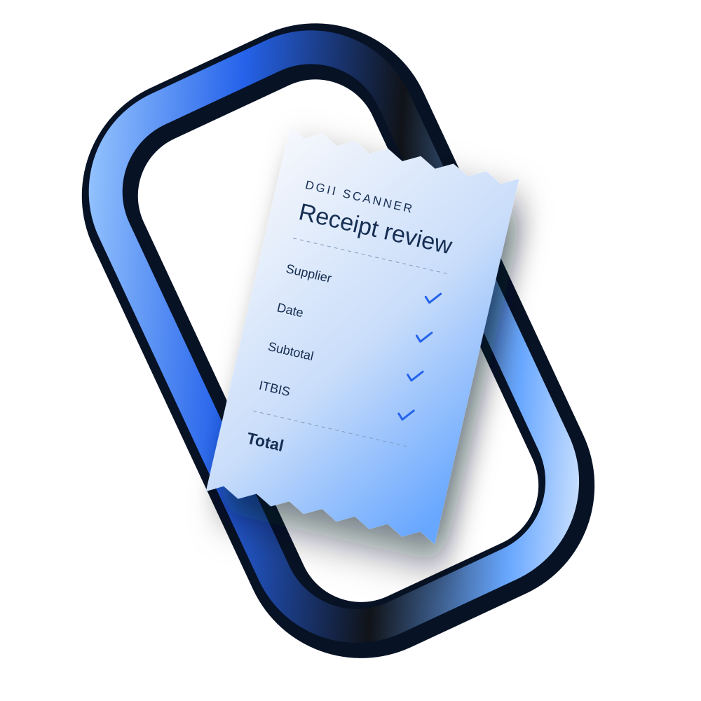

Personal receipts · Android
Your receipts.
In clear view.
Turn a paper receipt into a record you can find. Capture it, check the details, and keep your personal collection organized by month.
Pre-release v0.2.25 · Public download not yet available

Capture → Review → Keep01 / A clearer collection
Less searching.
More knowing.
A receipt holds useful details.
Keep them somewhere useful.
DGII Scanner brings the original photo and the extracted fields into one review flow. You check what was read before saving the receipt.
02 / How it works
From paper
to personal record.
Three steps, with you in control.
- 01
Capture the receipt.
Take a photo or choose an existing image. The app reads receipt text and supported QR codes to propose field values.
Camera + photo selection - 02
Check what matters.
Review the supplier, date, and amounts. Open the receipt photo while checking fields, zoom in, and correct anything that needs attention.
Photo comparison + editable details - 03
Keep it within reach.
Browse saved receipts by month. Save or share a receipt image, or export eligible receipts from a selected month as CSV.
Monthly records + export
03 / Know where your records live
Your account travels.
Your receipts stay here.
Email/password and Google sign-in are implemented in the pre-release app. Your account identifies you and tracks subscription status. Receipt records and protected photos stay on your phone.
Signing in on another phone does not restore your receipt collection. Keep exports of records you need.
Read our privacy policyIs this an official DGII app?
No. DGII Scanner is an independent personal app by Isaias Baez. It is not affiliated with or endorsed by DGII and does not file taxes or provide tax advice.
Do I still need to check the receipt?
Yes. Text recognition, QR extraction, and supplier matching can be incomplete or incorrect. Review dates, amounts, and other details against the original before saving. Keep your original documents.
Are my receipts backed up to my account?
No. Your account works across devices, but receipt photos and records remain on the phone. Clearing app data, uninstalling, device loss, or account deletion can make local records unavailable.
Can I download the app or buy a subscription?
The Android app is currently pre-release, with no public download offered here. Subscription tracking is implemented; paid purchases are not available. Production account setup is still being finalized.
How do I manage or delete my account?
Use Account management in the app for supported security settings, sign-out, and account deletion. You can also email graptorx@gmail.com from your account email to request deletion. See the privacy policy for local records and retention details.
Support, from the person building it.
Let’s make receipts
easier to keep.
Get in touch graptorx@gmail.com